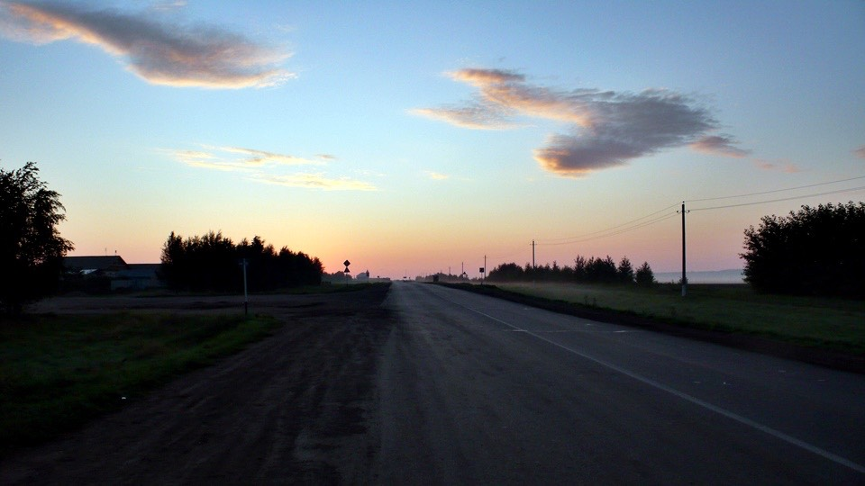
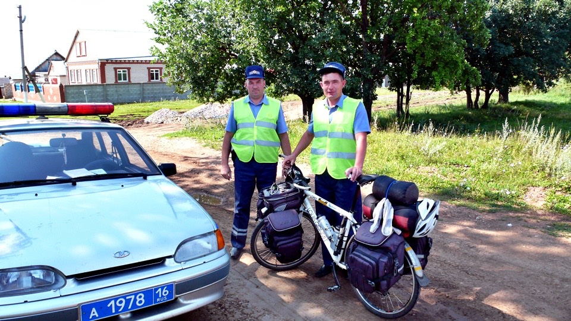

昨天睡覺的時候沒有將睡墊也拿出來用，因為公車等候站的椅子還算平整，所以就用收納好的睡墊當作枕頭來用。
晚上鐵製的公車站變得好冷，寒氣透過冷冰冰的椅子直接穿透帳篷，裡頭的空氣也冷得像冰一樣，還好睡袋還耐得住這樣的寒冷。
就當自己在冰塊上睡了一夜，平安外加有睡到就好，其它不拘小節。
除了太陽下山的時間誇張地延後到晚上十一點之外，太陽日出的時間則是些微賴床到六點出頭，在這之前都是冷得不像話的夜晚。
為了因應這些改變，我將手錶的鬧鐘設定成六點叫我起床，設定得太早也沒意義，冷得爬不起來。

睡醒之後掉頭往回走，昨天買晚餐那間餐廳裡面有獨立廁所，熱水免費供應，而且那邊是二十四小時營業。
打算趁著一早人還不多的時候去擦個舒服的澡，沒有住那裏的旅館也是可以享受其他設施的，順便打算在那邊吃早餐兼充電寫遊記。
看起來不怎麼樣的廁所，水龍頭流出溫水，因為雙手太冰冷了，冰冷的手碰到的時候感覺像滾燙的水，沾濕毛巾擦在身上才發現只是微溫的水。
徹徹底底地從頭洗到腳，非常舒服，只可惜擦完澡之後又要穿回已經第四天沒洗的髒衣服。
洗完澡後就可以吃早餐了，唯一供應的熱食就是這個很不像早餐的早餐，燉肉配馬鈴薯泥，一早就吃這個也未免太豐盛了些。
配著熱咖啡和麵包，洗完澡接著就是美食，終於開始享受像是人過的生活，為了省錢把自己搞得有點辛苦。
吃完飯就開工啦，拿出電腦和插頭，翻開筆記本配上續杯的熱咖啡，就這麼在店裡寫起遊記。
早班的員工除了招待我這個一大早就來光顧的人之外，也沒別的事情可以做，就看著我敲打鍵盤和整理照片。
簡單地跟他們講了旅行計畫，現在已經騎了一半了，說明完我的來歷後，餐廳的媽媽送給我一顆番茄，蔬果很珍貴，趕緊吃掉補充營養。
一顆番茄在電腦鍵盤上，像不像某間筆記型電腦公司的軌跡球專利放大版？
員工們問說我一個人騎車不會害怕嗎？
他們說接下來我會去的烏克蘭，那邊很貧窮，每次吃飯都會點的麵包，在烏克蘭是吃不到的，
麵包這樣的主食都沒有，而且那邊也沒有賣沙拉，那烏克蘭人都吃些什麼呢？
在中國的時候，邊境的人跟我說哈薩克怪人特別多，又窮得要命，連水都沒得喝。
在哈薩克的時候，沿路上都有人跟我說俄羅斯壞人很多，還做著拳打腳踢的動作。
在俄羅斯，關於下一個國家的印象，是沒有麵包跟沙拉可以吃，聽起來還不太糟糕～
真正去過鄰國的人也許沒那麼多，大家都是口耳相傳然後就繪聲繪影，往往實際到了當地之後回想起當時人們好心的叮嚀，
都會噗嗤的笑出來，講得實在是太誇張了，導致我很想聽聽看大家對於台灣的印象，經過誇張和渲染之後的台灣印象，究竟會以什麼內容流傳著。
臨走的時候買了五個不同口味的麵包，一路上可以吃到中午都沒問題，這邊的麵包味道實在太棒了，介於餅乾和麵包之間的口感，吃過就著迷。
水壺裝著買來的冰紅茶，東西都收拾完，十點多出發，早上剛進入餐廳的時候外面還冷得受不了，現在走出餐廳氣溫已經爬升到三十度了。
勤快一點的話應該早上穿厚的衣服，到了將近中午的時候就換成薄的排汗衣，這樣會涼快很多。
但是我太懶了，寧可熱一點，拉開拉鍊吹風也不想換衣服這麼麻煩，因為拉鍊往下拉的緣故，胸口上的汗水黏著很多隻不請自來的小飛蟲。
俄羅斯人開車太恐怖，車速快、又愛超車，連禁止超車的路段也是超個不停，相當地威脅我騎車時的安全。
不時會看到拿著手持式測速照相器材的警察在路邊攔車開罰，而且一攔都是好幾輛排在路邊等著被處理。
看到這些不守規矩的駕駛被抓我心裡都超開心的，心中也默默為警察伯伯叫好，請多抓一些，讓路上的交通平安一點。
路旁看到兩個警察吹著哨子、拿著指揮棒揮舞引起我的注意，看來又攔到違規的車輛了。
但是目前路上沒有其他車輛呀，該不會是在攔我吧？伸出食指比了比自己，警察點頭，揮手叫我過去。
真是難得，俄羅斯的警察居然主動搭理我，而不是像以往那樣視若無睹。

這兩個也不是壞警察，單純只想和我聊聊天，問我是哪裡來的，騎多久了這些話題而已。
壞警察在什麼地方才會遇到呢，莫斯科嗎？還是在國際流傳著的俄羅斯負面形象中才存在？
出發三個小時之後是休息時間，找了一個陰涼的公車站休息一小時。
之前在中國騎車都會有午睡的習慣，現在都沒那麼好命了，連晚上都睡不飽，早上外帶的麵包因為貪嘴已經吃光。
拿出一條中國買的熱狗當午餐，這個東西真是厲害，放了一個多月，歷經下雨的受潮、烈日的悶熱，都不會壞掉，味道還是很好吃。
一整天騎車速度都不快，路況跟昨天差不多就是上下坡交替出現。
現在是負海拔的這個疑問確定是手錶的海拔計壞掉了，而且越壞越誇張，今天最深的時候騎到海拔負三百五十公尺，明明就一直在爬山，感覺好像在潛水。
下午兩點半突然進入大城市，沒有任何徵兆就出現，而且不是平民小木屋群聚的那種，而是整片都是水泥大廈的建築物。
城市的入口豎立著龐大的煙囪，猜想應該是核能發電廠的冷卻爐之類的東西，白色的水蒸氣不停地冒出來，跟天空的白雲交纏在一起。
換個角度看這些大煙囪，如果要說俄羅斯的名產有哪些，核能發電廠也可以算是其中之一吧。
俄羅斯是聯邦制的國家，就跟美國有點像，美國是很多的州所組成，俄羅斯也是一樣的意思，所以目前所看到的告示牌都會有兩種語言。
除了通用的俄文之外，還有這個『加盟共和國』自己所使用的語言。
沒什麼特別的事要做的話，就不打算離開M7道路進到城市裡面，在郊區的雜貨店買果汁和圈圈餅乾沿路吃。
這陣子喝的果汁都太濃了，柳丁汁就酸到嘴巴口水流不停，水蜜桃汁可以在水壺內重新還原成果肉凝結在杯子中，蘋果汁也是極酸。
但總比喝汽水好，其實我最想買的是一般正常的水，冰箱中有賣水的牌子我通通都買過一次，全都是氣泡式礦泉水，難喝又噁心。
俄羅斯的水不知道能不能生飲？路上經過的餐廳裡面都會有洗手台讓客人洗洗手再用餐，要是自來水能喝的話就不用花錢一直買飲料了。
很不想進入城市，不停地往入口的反方向騎，這座城市正被烏雲籠罩著，隨時都會下大雷雨，更讓我想要加速逃離這邊。
大城市的主要道路都會有警察設立關卡，這邊也不例外，而且還是嚴格執行通關檢查的那種，所有車輛都要被閘門攔下來盤查。
我靠近的時候只點了頭表示禮貌，伸出手問說我能過去嗎？繞最旁邊的閘門走，輕輕鬆鬆又過了一個關卡。
哈薩克旅行從來沒有看過禁止自行車通行的標誌，俄羅斯到目前為止也沒看過這樣的標誌，繼續保持。
聯外的道路是一座很長的橋梁，底下是相當寬闊的大河，橋面因為施工變得不好走，旁邊就是鐵路，冒著黑煙的舊式火車頭拖運著應該是裝載油料的桶子。
火車經過的時候，整個路段全都是黑色的濃煙，燒煤炭的舊火車雖然很漂亮，但是真的太臭了啦>"<
下午六點多，距離從公車站出發又騎了四個小時，第二次休息，每天大概都是騎三～四個小時左右比較長時間地休息一下。
眼前出現一棟二十五小時經營的店家，冰箱直接放在外面，太陽直射裡面的飲料，這樣飲料冰了還會涼嗎？
而且也不擔心飲料會被路過的人偷走不付錢，對於俄羅斯的治安和人心還得慢慢觀察一陣子。
到店裡頭洗把臉，看著冰箱中琳瑯滿目的飲料，最底下有一瓶標價二十五元，售價只有同類型飲料的半價，看起來就是沒人會買的東西。
沒人買那就我買吧，再配上一個馬鈴薯麵包吃，這個透明如水的飲料，外頭畫了一朵花，俄文寫著像可樂的文字。
看也不明白，喝了才知道是香草可樂，其實沒那麼難喝，就當撿便宜被我買到了。
在店裡選商品和洗臉的時候正好有兩個卡車司機在裡面吃飯，他們吃飽要走的時候，我正在研究要怎麼把兩公升的飲料瓶帶著走。
司機大叔吆喝著叫我過去，手上拿著一袋小顆的蘋果，很明白是要送給我的，還交代我說要洗過之後才可以吃。
真好，早上有人請我吃番茄，下午還有小蘋果可以吃，多吃些蔬果補充維他命才不容易生病。
拿著一袋蘋果到店裡用水洗乾淨，出來的時候卡車司機還沒開走，又停在原地吆喝著叫我過去。
這次送給我一大把的瓜子，兩手都要捧不下，拿著瓜子該怎麼騎車呢？
放在最前面的包包上，沿路就隨手拿起來嗑瓜子，風大的時候和路不平震動的時候，就要伸手去搶救飛落的瓜子。
邊騎車邊嗑瓜子是蠻奇怪的事情，怎麼想都不太搭調，實際進行的時候真的要注意安全，單手騎負載這麼多行李的車子很不穩。
要是為了嗑瓜子而摔車，那真的會被當成單車笑話流傳了>"<
頂著逆風慢慢騎，碼表里程也一點一點地增加，下午七點半的時候突破一百公里，可以準備找落腳處了。
肚子還不餓，所以眼光搜尋的目標不是商店或餐廳，這個時候要露營睡覺也太亮了一點，今天找得是旅館的招牌。
果真在鳥不生蛋的郊區出現一棟建築，也是什麼都經營的那種，包含旅館。

這邊養了幾隻很好笑的狗，看到我靠近就吠了兩聲，然後回頭看其它狗有沒有跟上來助陣，有才敢繼續吠，不然夾著尾巴就跑掉了。
在裡面問過價錢，兩個員工討論了一陣子，開口報價只收兩百二十元，比我估計的住宿費便宜太多了。
我低頭看著張貼在櫃台內的住宿標價牌，房價從八百五十元、六百八十元、一路到四百四十元都有，就是沒看到兩百二十元的房間。
最便宜的那間四百四十元是雙人房，而我只有一個人，想必員工剛剛就是在討論要怎麼跟我收費的事情，單人就半價優待，感激！
小多牽進來放也沒問題，他們說只要我有辦法牽著車爬上樓梯那就儘管牽吧。
有好一陣子沒有牽著小多爬樓梯，之前可以爬上四樓但是手痛得要命外加氣喘如牛，現在就真的爬不上去了。
卸下包包一個一個從一樓運送到二樓，最後再把小多也抬上來，房間很舒適，看到床的時候覺得好溫馨。
住宿之後外頭雨雲就追上了我的腳步，又下起了雨，慶幸地嘆一口氣，這次沒淋到，算我運氣好。
髒兮兮的衣服終於可以洗滌，每一件洗出來的水都是黑灰色的，配上洗衣粉還會冒泡，有點恐怖，努力地全部都洗乾淨。
今天騎車的時候看著身上的外套，已經髒到覺得自己像流浪漢了，在公車站起床的時候，照鏡子也覺得臉色很差。
該是時候好好地讓自己睡一晚上旅館並且洗淨旅行的衣物，疲憊感累積到一定的程度之後，會讓毅力以及樂觀都跟著瓦解。
看著洗完的衣服滴著水，飄出的不再是汗臭味，心裡很有成就感，洗過澡之後就去餐廳吃飯。
雖然看不懂菜單，但我還是習慣性地會看一下內容，關心價錢在什麼區間？
竟然，這間餐廳的菜單我看得懂，將料理拍照然後圖文並茂地列印出來，讓我能夠輕鬆地點到想吃的東西。
不是照片翻拍得差，是列印的品質本來就不是很好，拍攝的技巧也有待改進，但實際送上來的餐點味道好得無話可說。
今天住旅館配上豪華大餐：有好吃的蔬菜沙拉配美乃滋、炸薯條、炸肉排、大碗公的蔬菜麵、以及每餐都會有的麵包和熱奶茶。
俄羅斯的餐桌上，少了哈薩克一定會有的糖罐子，只剩下鹽巴和胡椒，有些還會放番茄醬。
鹽巴跟胡椒如果不是用罐子灑的那種，那就是一個開口很大的小瓶子，讓客人用手捏一小撮調味料然後灑在食物上，這樣感覺美味多了。
將餐具收拾好之後打著飽嗝回到房間，今天休息的時間比較早，現在才九點多。
拿出電腦開始整理遊記，還有累積了十篇等著排版的英文版遊記等著我處理上線，倚靠在床邊，非常不爭氣的我真是累得沒辦法打字。
眼睛一直闔上，洗過熱水澡吃過美食，窩在舒適的房間裡，讓這幾天累積的疲憊快速地釋放，整個人突然無力化。
非常不支地睡去，一夜香甜，不用因為半夜有人在旁邊小便而驚醒、不用盯著入口的門警戒到深夜、不會有喝醉酒的人鬧事、
不用在乎夜裡會不會下雨、少了汽車整夜呼嘯而過的噪音、沒有蚊蟲的騷擾、睡覺時手中不用緊握著手電筒、夜裡氣溫不再往冰點直降...
旅行又不是修行，雖然嘗試各種樣貌的旅行方式相當有趣，但也得活下去才有辦法接著往下走。
繼續閱讀：7.30 麵包媽媽
俄羅斯-盧布－ 1：1.3 台幣
7.29
總計：609元
早餐燉肉配馬鈴薯泥、麵包、熱奶茶68元、外帶五個口味的麵包、大瓶冰紅茶83元、商店圈圈餅乾、果汁58元、點心香草汽水、馬鈴薯麵包35元、旅館220元、晚餐番茄、黃瓜、洋蔥沙拉、炸薯條配炸排骨、蔬菜湯麵、麵包、咖啡牛奶145元